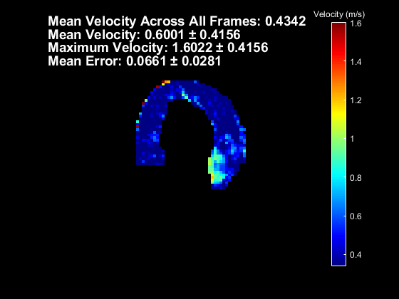
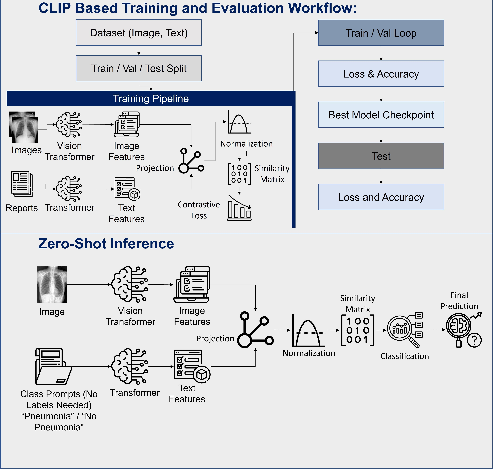
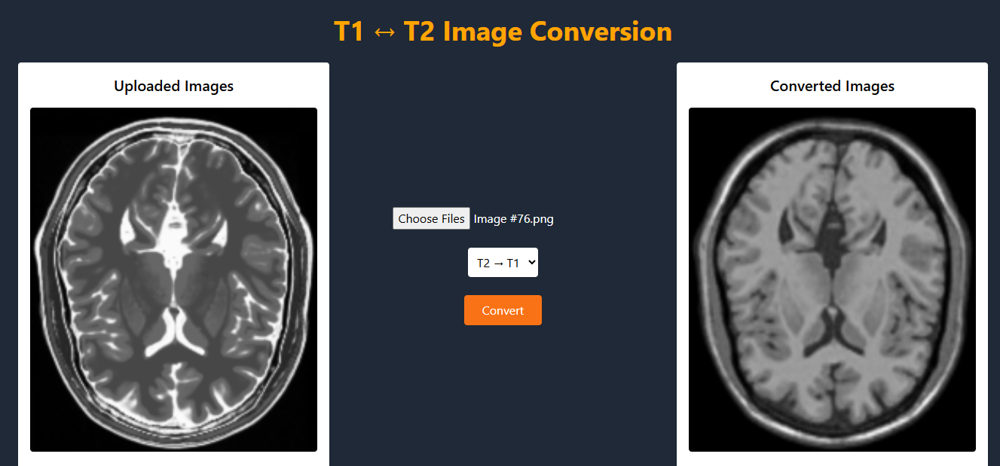
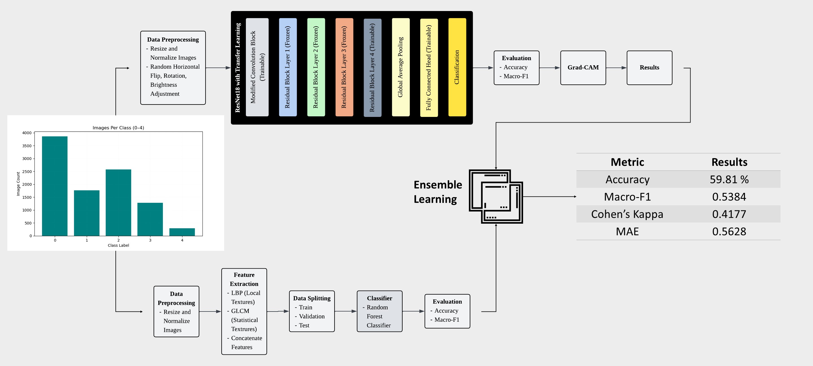
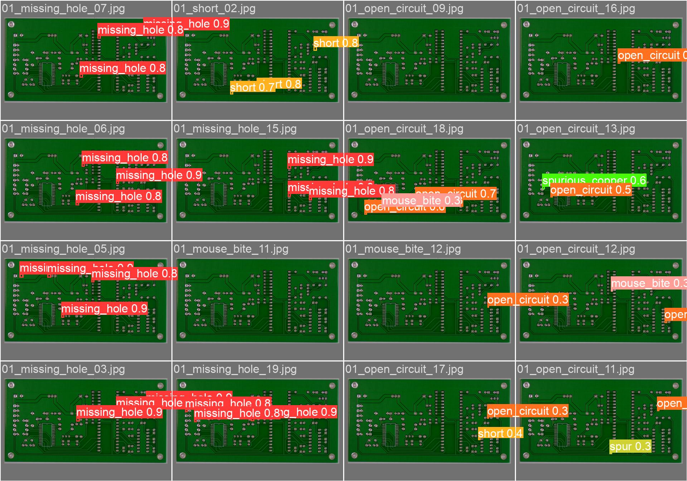
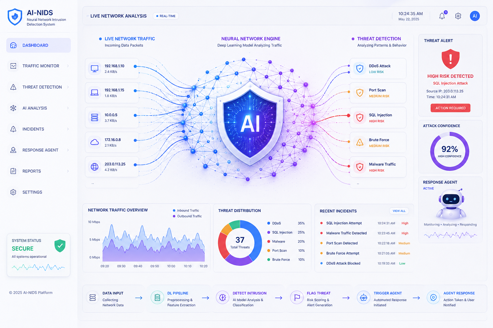

Multimodal AI Researcher
Signal Processing, Computer Vision, LLMs
Transforming complex data into intelligent solutions through cutting-edge research in signal processing, computer vision, and large language models.
Explore My WorkAbout Me
Multimodal AI researcher with hands-on experience in Signal Processing, Computer Vision, and NLP, grounded in a strong Electrical Engineering foundation. Proficient in building and deploying end-to-end ML pipelines using PyTorch, FastAPI, and Docker, with additional expertise in Edge AI deployment on resource-constrained hardware.
Experienced in Vision-Language Models, Generative AI, and real-time intelligent surveillance systems. Passionate about building intelligent systems that create measurable impact in the real world.
Programming Languages
Proficient in Python and MATLAB for research, data analysis, and algorithm development, with strong command of C and C++ for systems-level programming. Additionally experienced with JavaScript for web scripting, SQL for database querying, and Bash for task automation and Linux workflows.
Machine Learning & Deep Learning
Hands-on experience with PyTorch and TensorFlow for training Vision-Language models, GANs, and CNN architectures. Skilled in Scikit-Learn for classical ML, NumPy and Pandas for data processing, and Hugging Face for accessing and experimenting with pretrained models.
Computer Vision
Built CV systems using OpenCV for image processing, Torchvision for model training, and Ultralytics YOLO for real-time object detection and multi-object tracking. Experienced with DeepStream and GStreamer for multi-stream video analytics pipelines.
Generative AI & Agentic Systems
Exploring RAG pipelines and agentic workflows using LangChain and LangGraph, with ChromaDB as vector store for knowledge retrieval. Familiar with n8n for workflow automation and building LLM-powered applications.
MLOps & Edge AI
Deployed inference services using FastAPI and Flask, containerized with Docker, and hosted on AWS EC2 and GCP. Experienced with ONNX Runtime for cross-platform model inference and TensorRT for optimized deployment on edge devices including Jetson Nano and Raspberry Pi. Familiar with GitHub Actions for version control workflows.
Research and Development
Published at ESMRMB 2025 (Springer) on 4D cardiac flow MRI reconstruction, covering GPU-accelerated signal processing, advanced reconstruction algorithms, and quantitative blood flow analysis. Currently researching deep learning-based Network Intrusion Detection systems.
Featured Projects

4D Cardiac Flow MRI Reconstruction
Designed a reconstruction algorithm resilient to anomalous k-space data for cardiovascular flow imaging, with GPU-accelerated MATLAB pipeline achieving up to 44x speedup and quantitative blood flow analysis.

CheXzero
Trained a CLIP-inspired Vision-Language model with dual-encoder architecture using contrastive learning for multi-label chest pathology classification, enabling label-free zero-shot diagnosis without radiologist annotations.

GAN-based T1-T2 MRI Conversion
Engineered a CycleGAN framework for bidirectional unpaired MRI translation using adversarial and cycle-consistency losses. Deployed as a FastAPI inference service containerized with Docker and hosted on AWS EC2.

Knee Osteoarthritis Severity Prediction
Built an end-to-end grading pipeline combining texture descriptors with a fine-tuned ResNet18 for 5-class severity prediction. Integrated classical ML and deep learning outputs via stacked ensemble learning with Grad-CAM explainability.

YOLO-based PCB Defect Detection
Trained a YOLO-based object detection model on 700+ PCB images across 6 defect classes in PyTorch. Converted to ONNX format for CPU-based real-time inference without GPU dependency.

Agentic Network Intrusion Detection System
Currently developing an agentic NIDS leveraging deep learning for real-time threat detection and autonomous response across network traffic streams.